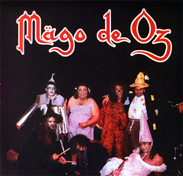

Mägo de Oz
Este fue el álbum debutante para la banda.
Fue publicado en el año de 1992, con el nombre
"Mägo de Oz", consta de 10 sencillos. Los cuales son:
- Lado "A"
- T'Esnucare contra'l bidé 3:51
- El Lago 4:29
- Rock Kaki Rock 3:14
- Gerdundula 1:53
- Lo que el Viento se Dejó 6:22
- Yankees Go Home 4:50
- Lado "B"
- El Hijo del Blues 4:56
- Nena 4:03
- Gimme some lovin' 3:08
- Mägo de Oz 9:16
